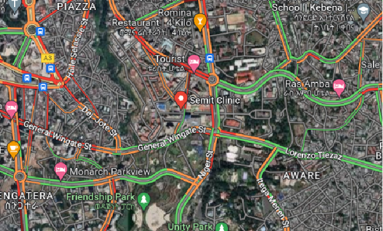

Ethiopia is one of the world's oldest nations with a
rich history dating back to the Aksumite Empire around 100 AD. Known as
the cradle of humanity, it has a long tradition of Christianity and a
unique script, Ge'ez. The country was never colonized, maintaining its
independence except for a brief Italian occupation from 1936 to 1941.
Overview of Ethiopia Located in the Horn of Africa, Ethiopia is the
second-most populous nation in Africa with over 115 million people. Its
capital, Addis Ababa, is the political and economic hub. Ethiopia is
known for its diverse cultures, languages, and landscapes, ranging from
highlands to lowland deserts. FMCG Sector in Ethiopia The FMCG sector in
Ethiopia, which includes products like food, beverages, and personal
care items, began to grow significantly in the late 20th century. Key
drivers of this growth include urbanization, rising disposable incomes,
and changing consumer preferences. Major international brands like
Coca-Cola, Unilever, and Nestlé have established a strong presence.
We are one of the largest Coca-Cola bottling partners globally based on revenue, ranked eighth worldwide and holding the top position on the African continent. Our operations account for approximately 40% of all Coca-Cola volumes sold in Africa. With a workforce exceeding 18,000 employees, our 40 bottling plants cater to over 720,000 customer outlets, showcasing our significant presence and impact in the region's beverage industry.


Line 1 RGB 36,000 BPH

Line 1 RGB - 26,000 BPH
Line 3 RGB - 36,000 BPH
Line 5 RBG - 48,000 BPH

Line 1 RGB 36,000 BPH
Line 2 RGB 36,000 BPH

Line 1 RGB 24,000 BPH
Line 2 PET 10,000 BPH

Line 1 RGB - 36,000 BPH
Line 2 PET - 48,000 BPH
Line 1 Preform Line 36,079 BPH
Line 2 PET 2,400 BPH
Dima is the town where our newly inaugurated factory is located. The Dima Area serves as a significant cross country transport corridor, playing a crucial role in driving sales, particularly with the PET pack. In the neighborhood, there are five local water and four juice factories.
RSM Abel
ASM Mohamed
2 CSRs
Routes - 12
Outlet universe – 1,554
Service level – 1X

The population is approximately 5.2 million people with a growing rate; the city has experienced a 4.43% increase in population since 2021. The city's major economic activities encompass trade, manufacturing, transport, communication, education, health, social services, hotels, catering services, and agriculture.
Inflation and Consumer Impact:
High Inflation: Consumer buying power is being adversely affected by high inflation, especially in food
prices, which have averaged 42%, surpassing the national average of 37%.
Market and Traffic Ban Impact:
Traffic Ban: A traffic ban in the Addis market has disrupted the redistribution process and impacted the
Profit and Loss (P&L) of OCCD.
Sales and Outlets:
Outlets in Addis Ababa: The total outlet universe in Addis Ababa, including towns in the Oromia region and
the newly formed Sheger Town, is over 46,440 outlets.
Serviced Outlets: Among these, 16,000 outlets are serviced weekly by sales representatives, focusing on High
VPO (Volume Per Outlet) outlets.
These points highlight the significant growth and economic challenges faced by Addis Ababa, particularly with high inflation affecting consumer purchasing power and logistical issues impacting market operations.

Since 2005 Ethiopia has been implementing ambitious government-led low- and middle-income housing programs. The program has increased the number of homeowners and rental units in Addis city. Therefore, condominium houses have become the new way of life in Addis city, Addis up countries, and the top ten cities. Approximately, there are more than 175,000 units of multistory condominiums have been completed in over 100 sites throughout the city, with an additional 132,000 housing units under construction. These sites bring an opportunity to increase our market share through the availability of our products. In most cases, the ground floor of the buildings is allocated for the business center, which has a high potential for the development of new accounts and creating visibility.
.jpg)
Summit Figa also known as “Fiyel Bet “ is a place where most new home makers have settled. The place is mostly occupied by middle level apartment owners where the ground floor is designated for commercial purposes. In addition to this, the place is mostly populated by younger residents who are our target consumers
Routes – 6
Outlet universe of 802
Service – 2x
Chichiniya is the most vibrant place located near to Bole Airport and mostly occupied by Bars and restaurants (some of which are famous for specialized foods), there are also Hotels where people both from the city or abroad come to have fun and relax. Top Addis Ababa Bars & Clubs are found in Chiniya, as well as most of the city’s liquor stores. This all makes the place to be the most attractive area for liquor sales and distribution.

RSM – Azarias G
ASM – Aster
CSR – Hiwot
> CSR – 4
Routes – 30
Outlet Universe – 3085
Service – 1x – 6
Rwanda is a Suburb in a prime area of Addis Ababa, Bole Sub-city it is named after the embassy of Rwanda, that is located off the main road. It is a nice safe gated residential neighborhood with a mix of business, offices and Emerging bars & Muslim restaurants. The area is also best known for the hospitals that offer excellent services. We have a strong hold in both RGB & PET sales in this emerging market. We are partnering with Hospitals to grow Fanta share as a Big Bet (vs Mirinda)
RGM – Azarias G GT ASM – Aster KA – ASM Abel CSRs – ysak & Fanna Route – 12 Route – 12 Outlet Universe – 3085